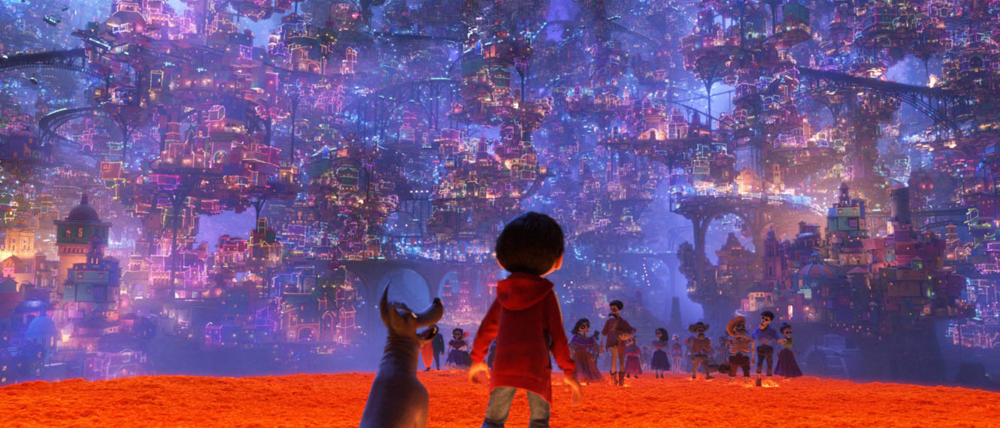
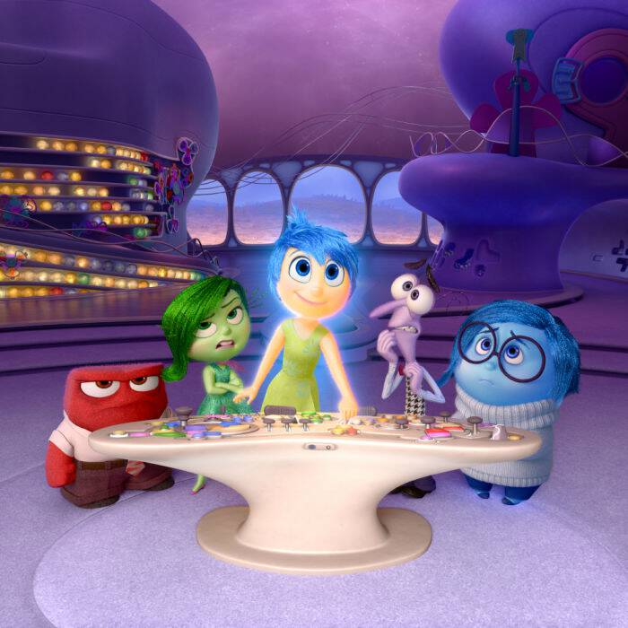
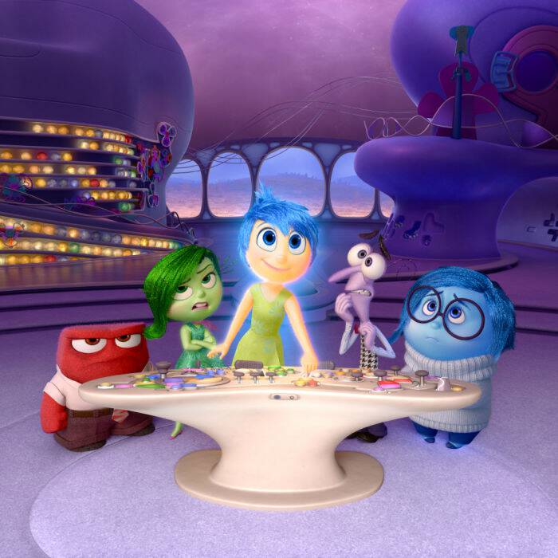
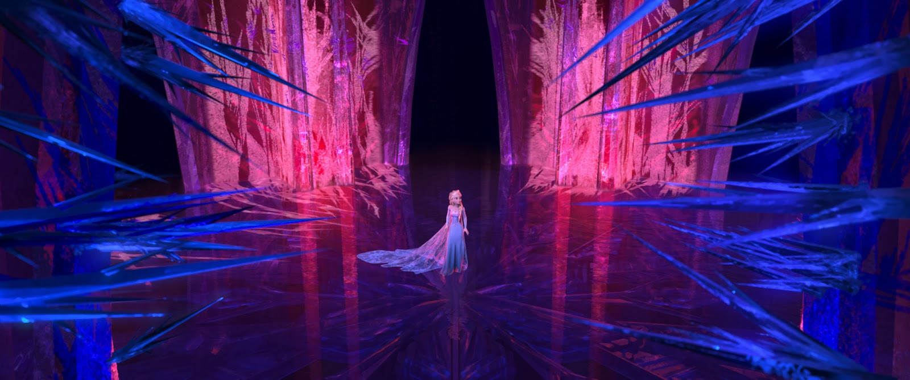
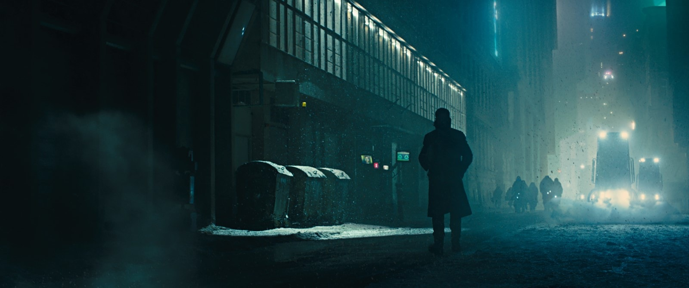
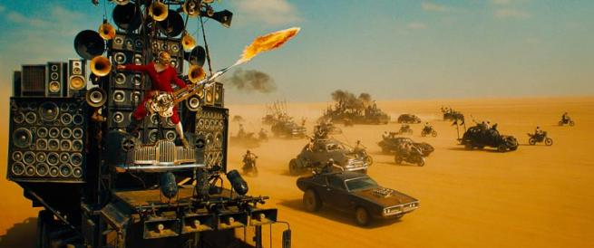
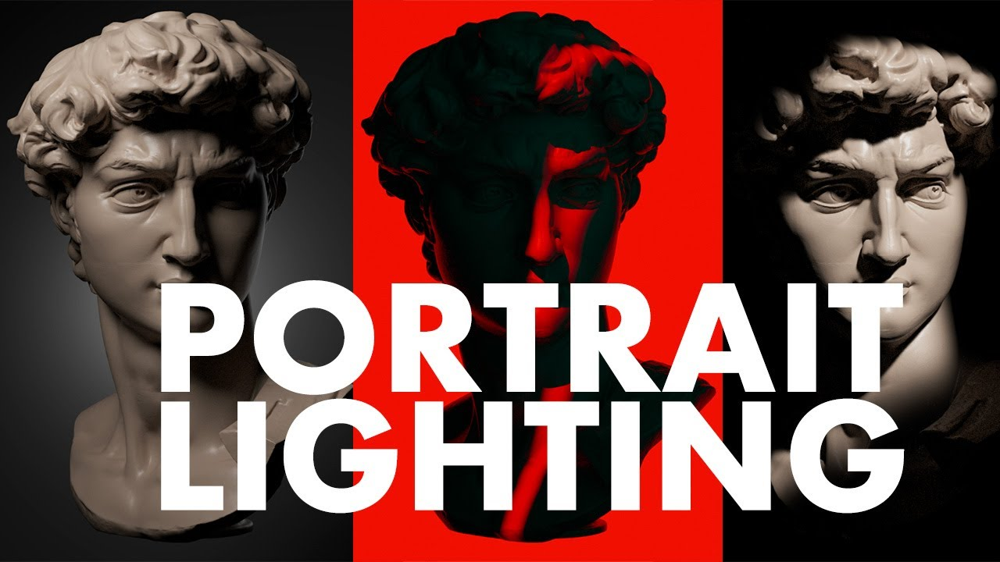
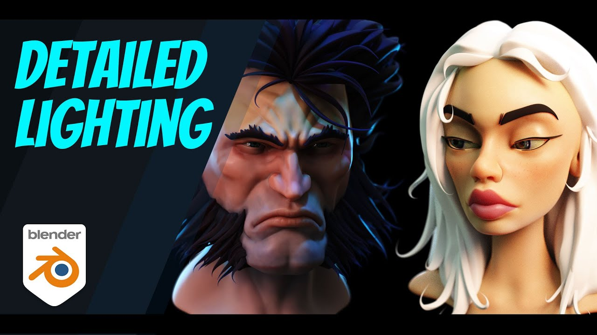
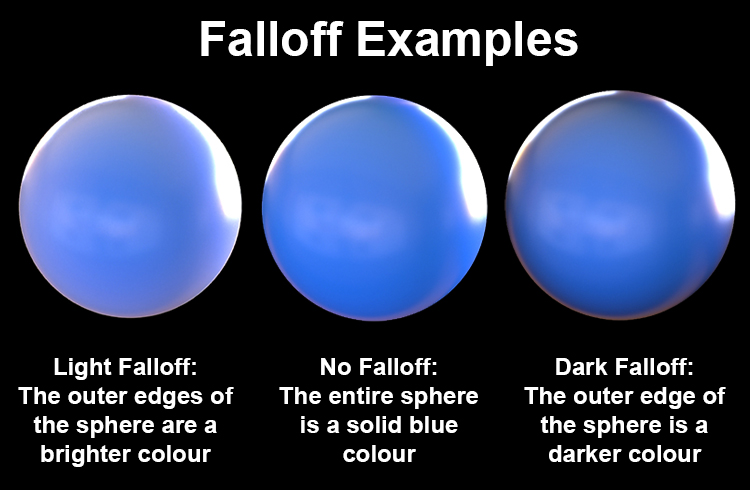

Falloff 실제 적용 예시 및 애니메이션 사례
세계적인 스튜디오와 영화에서 활용된 빛 감쇠 기법들
픽사/디즈니 사례
PIXAR

Coco - 촛불 Falloff
PIXAR
 

Before
After
Inside Out - 라이팅 비교
DISNEY

Frozen - 얼음 궁전
영화 라이팅 기법
FILM

Blade Runner 2049
CAMERON

Avatar - 판도라 생명체
MILLER

Mad Max: Fury Road
3D 소프트웨어 실습
MAYA

Maya - 캐릭터 라이팅
BLENDER

Blender - 상세 라이팅
TUTORIAL

Falloff 맵 활용법
단계별 실습 가이드
1
참조 이미지 분석 및 조명 방향 파악
2
주조명 설정 후 Falloff 값 조정
3
캐릭터/오브젝트에 미치는 영향 범위 확인
4
보조 조명으로 밸런스 조정
5
최종 렌더링 후 결과 비교 분석
Falloff 패턴 비교
Linear Falloff
일정한 감소
Quadratic Falloff (현실적)
자연스러운 감소
Exponential Falloff
급격한 감소
Custom Curve
예술적 제어
TIP: 스토리와 감정에 맞는 Falloff 패턴 선택이 핵심
다음: 그림자의 이해 (Soft Shadow와 Hard Shadow)